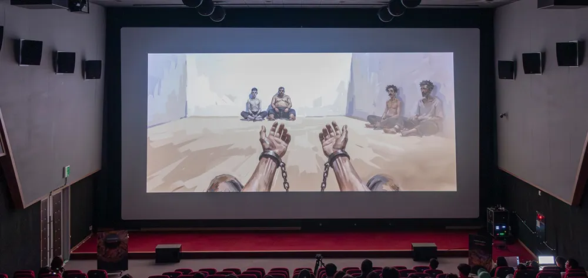
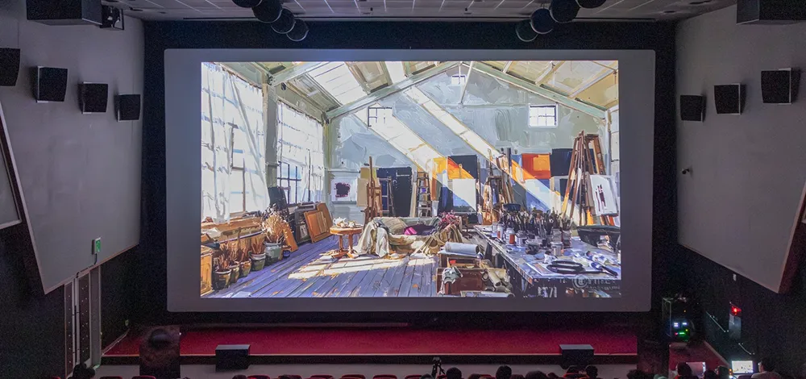

지난 10월 15일 막을 내린 31회 부산국제영화제(BIFF)는 산업적 관점에서 논의를 확장하고 있다. 아시아를 대표하는 영화제가, 올해 아시아 지역 영화시장에 깊게 관여하는 3만여 명이 찾은 BIFF 공식 마켓 아시아콘텐츠&필름마켓(이하 ACFM)에서 AI를 주요 의제로 다룬 것은 시사하는 바가 크다. AI가 일부 창작자의 실험적 도구를 넘어 영화 제작과 콘텐츠 비즈니스 전반에서 외면하기 어려운 핵심 요소로 자리 잡고 있다는 뜻이기 때문이다.
ACFM이 AI를 논한 것은 올해가 처음은 아니다. 다만 지난해 ‘영화적 특이점’을 주제로 AI를 접목한 시장의 미래를 전망하는 포럼이 진행됐다면, 올해는 한층 구체적인 질문을 제기했단 점에서 의미가 컸다. 실제 상업영화 제작 현장에서 AI는 어떻게 활용되고 있는가. 한국과 중국, 일본의 창작자들은 AI를 이용해 어떤 작품을 만들고 있는가. 나아가 영화인들이 이 기술을 제대로 활용하려면 무엇을 배워야 하는가.
영화제가 한창이던 지난 10월 9일부터 11일까지 영화진흥위원회(KOFIC)가 주최한 ‘2026 KOFIC AI 쇼케이스’도 이런 질문에 대한 답을 모색하는 자리였다. 한국영화아카데미(이하 KAFA)와 ㈜MBC C&I가 주관하고, 문화체육관광부, 한국콘텐츠진흥원, 방송문화진흥회, 부천국제판타스틱영화제가 후원한 이번 쇼케이스는 ‘창의성의 진화: AI로 쓰는 새로운 스토리’를 슬로건을 삼았다. 상업영화 제작 현장의 기술 시연부터 한국·중국·일본 창작자들의 제작 사례 발표, AI 영화교육의 방향을 모색하는 포럼까지 폭넓게 다뤘다. AI가 영화 제작의 도구로 자리 잡아 가는 과정과 그에 따라 새롭게 요구되는 창작 역량을 사흘에 걸쳐 조명한 것이다. 서울을 제외한 지역에서 AI 영화·영상 관련 교육을 접할 기회가 많지 않다는 점에서 시장에서 활동하는 플레이어 간의 네트워크는 물론 예비 영화인들을 위한 교육 프로그램으로 유용했다는 평가다.
기존 영상 언어와 AI의 ‘창의적’ 결합
쇼케이스 첫날인 10월 9일, DAY 1은 영화 제작 현장에서 AI가 어떻게 활용되는지를 살펴보는 기술 워크숍이 마련됐다. AI 영상의 정교함을 과시하는 자리라기보단, 제작 공정에 AI를 어떻게 접목하고 창작자의 의도를 구현하는지가 논의의 중심이었다. 임재호 덱스터스튜디오 R&D 연구소 부소장이 ‘ComfyUI를 이용한 AIVFX 워크플로우 따라하기’를 주제로 제작 과정을 시연했다. ComfyUI는 이미지 생성과 수정 등 여러 기능을 노드(Node) 형태로 연결해 작업 흐름을 설계하는 프로그램이다. 강연에서는 3차원(3D)으로 공간과 카메라 구도를 미리 설정해 프리 비즈를 만든 후 AI를 활용해 질감과 조명을 입히고, 이를 실사 촬영에 가까운 영상으로 발전시키는 과정을 소개했다. 영상 속 불필요한 인물이나 사물을 지우고, 이미지의 일부를 수정하거나 화면 바깥의 공간을 확장하는 등 실제 VFX 작업에서 활용되는 기술도 다뤘다.
KT스튜디오지니의 은재현 AI사업추진팀 팀장은 ‘AI Cinema Studio: 창작자 중심의 새로운 AI 제작 시스템’을 소개했다. 지난 8월부터 방영된 ENA 드라마 화제작 <신병 4 : 사보타주>의 풀 시퀀스와 글로벌 4억 뷰를 기록한 웹툰 원작 AI 숏폼 드라마 <무신귀환록>의 제작기를 토대로, 개별 장면의 구현보다 콘텐츠 제작 과정을 체계적으로 설계하는 데 초점을 맞춘 강연이었다. 특히 캐릭터부터 의상, 소품, 로케이션 등 작품의 세계관을 미리 정리한 ‘애셋 바이블(Asset Bible)’을 통해 AI가 생성하는 영상의 일관성을 유지하는 방법이 눈길을 끌었다. 실제 배우의 움직임과 표정 등을 AI 캐릭터에 적용하는 ‘모션 트랜스퍼(Motion Transfer)’ 등 기존 영화 제작 방식과 AI를 결합하는 기술도 소개됐다.
내용은 달랐지만 덱스터스튜디오와 KT스튜디오지니가 보여 준 방향은 일관됐다. 생성형 AI의 발전이 영화 제작의 문턱을 낮추고 있지만, 시나리오와 캐릭터, 공간 설계와 카메라 연출 등 기존 영화 제작의 문법은 여전히 중요하다는 것이다. 오히려 AI가 정교해질수록 창작자의 의도를 명확히 설정하고 이를 일관된 결과물로 구현하는 역량이 작품의 완성도를 좌우하게 한다는 의미다.
AI 시대 화두 된 창작 오리지널리티
이튿날인 10월 10일부터 논의의 무게는 기술에서 작품으로 옮겨 갔다. DAY 2 ‘한중일 AI 영화창작교류’ 세션으로, AI 영상 창작자와 기술 관계자들인 일본의 타카하시 히로무 AI 영상 크리에이터와 고진혁 스튜디오 이차원 대표, 중국의 AI 기업 미니맥스(MiniMax)의 판위잉 멀티모달 콘텐츠 디렉터와 류츠 AI 영화감독 겸 VIDU 콘텐츠 스튜디오 대표가 참석했다. 일본과 중국에서 만들어진 해외 초청작과 한국 작품 포함 10편을 상영하고 관객과의 대화(GV)를 진행하면서 제작 사례와 작업 과정을 직접 소개하는 방식이었다.
그동안 개별 창작자나 지역 단위에서 이뤄지던 AI 영상 창작에 관한 논의가 국가 간 교류로 확장됐다는 점에서 의미가 있다. 한중일 창작자들이 각국의 작품과 제작 방식을 공유하면서 서로의 기술 활용 수준과 창작 역량을 가늠하고, 향후 협력 가능성을 모색하는 계기가 됐기 때문이다. 특히 AI 영상 제작 기술이 빠르게 발전하는 상황에서 각국의 창작자들이 직접 만나 성과와 고민을 나눴다는 점은 단순한 작품 상영 이상의 의미를 지닌다.
이상욱 MBC C&I 부국장이자 AIXR 콘텐츠 팀장은 “일본이 아직 AI 활용에 다소 보수적이라면 중국은 상업적 측면에서 적극적으로 활용하는 걸 볼 수 있었다”며 “아직 국내 AI 영화가 상업적으로 성공한 사례가 없는 상황에서 이번 쇼케이스를 통해 보다 개방적으로 접근할 수 있겠다는 느낌을 받았다”고 말한다.
눈여겨볼 점은 기술적 성취 못지않게 창작자의 독창성에 대한 관심이 높았다는 것이다. 연사로 나선 일본 AI 크리에이터 타카하시 히로무에게 “창작자 개인의 오리지널리티는 무엇인가”라는 질문이 나온 게 대표적이다. 배우에서 영상 크리에이터로 전환해 지난해부터 AI를 접목한 영화를 만들고 있는 타카하시는 지난 7월 부천국제판타스틱영화제에서 일본인 중 유일하게 경쟁 부문에 초청받는 등 AI 크리에이터로 촉망받고 있다. 그를 향한 질문과 답은 AI가 영상 제작의 상당 부분을 수행하는 만큼, 창작자 고유의 개성과 미학은 어디서 비롯되는지를 구분하는 게 중요해졌다는 창작자와 업계의 고민을 드러냈다.
AI 영상 제작 방식의 변화도 화두에 올랐다. 여러 작업 단계를 연결하는 노드 기반 제작 방식과 대규모언어모델(LLM)을 활용한 새로운 작업 방식의 차이, 기술 발전에 따라 기존의 제작 공정이 어떻게 달라질 수 있는지에 관한 질문이 이어졌다.
이날 상영된 국내 작품인 <테크노 블러드>는 이런 관점에서 관계자들의 관심을 샀다. 이상욱 부국장은 “고어 호러 장르는 알고리즘이 막혀 프롬프트로 구현하기가 힘들기도 하고, AI 특성상 결과물을 창의적으로 표현하기보단 평균화시키는 특징이 있다”며 “젊은 감독들이 독창적으로 이런 문제를 해결했다는 점에서 신선했다”고 말했다.
완성하는 힘, 공동제작, 파이프라인 설계 능력의 강화
이번 쇼케이스에서 가장 주목받은 세션은 10월 11일 열린 DAY 3 ‘AI 시대 영화교육’이었다. AI가 자연스러워진 영화시장에서 글로벌 주도권을 쥘 차세대 영화인을 어떻게 발굴하고 육성할 것인지가 관건이란 점에서다. 기술의 발전 속도가 워낙 빠른 만큼 특정 프로그램의 사용법을 가르치는 것만으로는 충분하지 않다는 위기감을 느낄 수 있었다.
부산영상위원회가 진행한 AI 아티스트 양성 프로그램 수료작, MBC C&I와 영화의전당이 진행한 작품을 함께 상영한 오전 섹션 ‘메이드 인 부산’ 1, 2부는 이런 문제의식을 실제 작품으로 보여 준 사례다. 1부는 부산영상위원회 AI 아티스트 양성 프로그램에서 5주간의 교육에 참여한 12명의 창작자가 10분 이내로 완성한 12편의 단편 가운데 우수작 4편(<커튼콜> 차시영 감독, <주홍여자고등학교> 유진희 감독, <대왕문어> 김영조 감독, <우산 속의 바다> 하종수 감독)을 상영했다. 동네 미용실, 재개발을 앞둔 공간 등 부산의 일상과 지역 경험을 토대로 한 작품들이다. 감독들은 GV를 통해 타인의 실제 영상물을 참고 자료 삼아 AI와 작업했을 때의 저작권 문제, 의도와 다르게 나온 결과물의 사용 방식 등에 대한 고민과 의견을 밝히기도 했다.
2부는 MBC C&I와 영화의전당이 진행한 워크숍 작품 4편(<5분의 기다림> 김전한, 구지원 감독, <잭스룸> 장재원, 김지은 감독, <호랑이가 산다> 도왕영, 박혜민, 박승훈, 레일라 감독, <도끼> 윤세희 감독)의 상영이 이뤄졌다. 황선숙 MBC C&I 이사는 “AI 도구는 하루가 다르게 바뀌고 있고, 지난여름에 배운 기능이 이미 다른 기능이 돼 있을 만큼 발전 속도가 빠르다”며 “특정 도구의 사용법보단 어떤 도구를 쓰더라도 자신의 이야기를 끝까지 완성해 내는 힘을 기르는 데 집중했다”고 설명했다.


AI를 사용해 그림을 그린 듯한 비주얼을 선보인 ‘메이드 인 부산’
상영작 <도끼>(왼쪽)(위)와 <잭스룸>
오후 섹션에서는 KAFA의 첨단영화제작교육 수료작 및 AI 특화과정 이수작 상영과 교육 방향(저작권, 초상권, 윤리 문제 등)에 관한 발표와 제언, 장훈 크리에이티브 망고 대표 및 감독, 신철 부천국제판타스틱영화제 집행위원장, 양정화 크리에이티브 망고 PD, 최익환 숭실대학교 교수, 이승무 한국예술종합학교 교수, 조근식 KAFA 원장이 함께 종합 토론을 하는 포럼이 이어졌다.
KAFA+ 영화인교육 AI기술활용교육 우수작 9편(<이상한 지하철> 김경림 감독, <판타지(A Secret Waltz)> 손원평 감독, <로드 투 디씨(Road to DC)> 손태웅 감독, <무한의 주인> 엄세현 감독, <분실물 센터> 이수지 감독, <고립> 정현 감독, <바다는 해변의 발자국을 기억한다> 차지윤 감독, <별 볼 일 없는 우리 삼촌> 성시흡, 홍승연, 김나현, 김찬호 감독, <언캐니 오피스> 서준석, 현보나 감독)과 KAFA의 첨단영화제작교육 수료작(<공가> 진현광, 김수경, 한나라, 안슬기 감독, <오리진> 이무혁, 전주희, 원은선, 남중범, 류승희 감독, <마고> 김동찬, 김수빈, 박현신, 배재형, 신은랑 감독)을 상영하는 과정에선 개인 창작자 중심으로 발전해 온 AI 영상 제작을 협업의 영역으로 확장하려는 ‘공동제작’ 시도가 눈에 띄었다. 최대 3명이 공동 연출했던 지난해와 달리 올해는 작품에 따라 4~5명이 참여하도록 했기 때문이다. 특히 4명의 감독이 협업한 <별 볼 일 없는 우리 삼촌>은 AI 작품으로서는 보기 드문 코미디물로, 상영 시 객석의 좋은 반응을 이끌어 냈다.
더불어 KAFA 첨단영화제작교육 운영을 맡고 있는 크리에이티브 망고의 장훈 감독은 “작년에는 스토리텔링에 포커스를 맞췄다면 올해는 파이프라인을 자체적으로 설계할 수 있는 능력을 키워 보려고 했다”면서, “AI 기술이 너무 빨리 발전하고 툴 업그레이드가 너무 많이 되다 보니, 기술이 바뀔 때마다 그 기술을 적용하고 자기에게 맞는 확실한 파이프라인을 고민할 수 있는 능력을 더 키울 필요가 있었다”고 설명했다. 작년에는 10~15분짜리 단편이 나왔다면, 올해는 대부분 30분 정도의 스토리를 길게 가져가면서 이야기를 풀어내는 힘을 강화시킨 것도 주요한 변화다.
AI와 영화인의 관계 맺기 설정해야
포럼의 모더레이터를 맡은 차승재 중앙대학교 교수는 “지난 영화의 역사를 돌아보면 기술의 발전과 영화의 발전이 항상 함께해 왔다. 유성에서 토키로, 흑백에서 컬러로, 필름에서 디지털로. AI는 그 어떤 과거의 변화보다 훨씬 더 커다란 변화를 가져올 것으로 보인다. 누가 이 기술을 먼저 제대로 다루느냐에 따라서 어느 나라가 영화산업에서 우위를 점하느냐 하는 중요한 포인트가 될 것 같다. 또한 공공교육은 AI를 어떻게 다뤄야 하는가에 대해서도 함께 생각해 보는 자리로 만들겠다”며 서두를 열었다.
양정화 크리에이티브 망고 PD는 “AI가 개인 크리에이터의 영화 제작에 초점이 맞춰져 있지만, 영화산업 안에서는 다른 영화 인력과 함께 호흡하며 작업하는 방법을 고민해야 한다”고 설명했다. AI 영화도 결국 산업의 일부인 만큼 공동 창작과 역할 분담, 제작 과정에서 발생하는 갈등을 해결하는 능력이 필요하다는 취지다.
국내 영화계에서 가장 발 빠르게 AI 영화를 받아들인 영화제인 부천국제판타스틱영화제를 이끄는 신철 집행위원장은 AI가 영화 제작의 자본 장벽을 낮출 가능성에 주목했다. “그는 과거 한국영화계가 막대한 자본과 기술력을 갖춘 할리우드에 압도당하지 않을까 우려했다”며 “AI로 자본의 벽이 낮아지면 새로운 창작자들에게 기회가 될 수 있다”고 내다봤다.
그렇다면 학생을 가르치는 영화학교의 역할은 어떻게 달라져야 할까. 최익환 숭실대 교수는 기존 예술교육이 기술을 익히는 데 지나치게 집중해 왔다고 지적했다. 카메라를 다루는 법이나 시나리오를 쓰는 법을 가르치는 교육에서 나아가, 창작자가 스스로 실험하고 작품을 완성할 수 있는 환경을 마련해야 한다는 것이다. 그는 “학생들은 학생이 아니라 지금 플레이어의 입장으로 바로 들어가야 한다”며 “어떤 판 위에서 놀게 할 것인가가 교육에서 가장 중요한 것 아니냐”고 말했다.
이승무 한국예술종합학교 교수는 “문제는 AI가 우리보다 똑똑해졌을 때 어떻게 해야 하느냐는 것이다. 곧 마주칠 상황이다. 그러면 영화인, 영화학교 학생이라는 전문성이 무너질 수 있다. 기존 영화인들이나 영화교육의 해자가 끝나 가고 있는 시대가 아닌가 싶다”면서 “웹소설이나 웹툰에서 많은 일반인들이 예술의 민주화를 이루어 산업을 이뤄 가는 것처럼 길을 넓혀 주어야 하는 게 아닌가. 지금까지와는 전혀 다른 의미의 정밀교육이 필요할 수 있는데, 안목이나 기술적인 이해도, 산업적 역량을 지닌 리더급의 초격차 아티스트들을 만들기 위한 교육은 어떻게 해야 하는가. 이 부분들을 고민하고 있다”는 말로 위기의식을 드러냈다.
조근식 KAFA 원장은 보다 본질적인 차원의 질문을 던졌다. 그는 “개인적으로 AI가 등장했을 때 값비싼 VFX 정도를 대체해 싸고 편리하게 이용할 수 있겠구나 정도로만 생각했다”며 “올해 들어 그런 생각을 완전히 버리게 됐다”고 했다. 그러면서 “결국 근원적인 고민은 AI와 창작자 간 관계 맺기를 어떻게 설정할 것인가에 대한 교육이 이뤄져야 한다”며 “기존의 영화로서의 표현 방식, 상상력의 범위 같은 것만 다루는 교육은 뒤처지게 될 것”이라고 했다.
기존 영상 언어를 AI 안에서 보다 창의적으로 구현하는 역량의 강화. AI가 만드는 평균적 결과에 함몰되지 않은 돌연변이를 향한 지지. 협업이 가능한 플레이어로 만드는 교육의 필요. 진화하는 AI 시대, 창작자를 발굴하고 성장시킨다는 것은 이 모든 영역의 빠르고 절대적인 협력을 요구하고 있다.